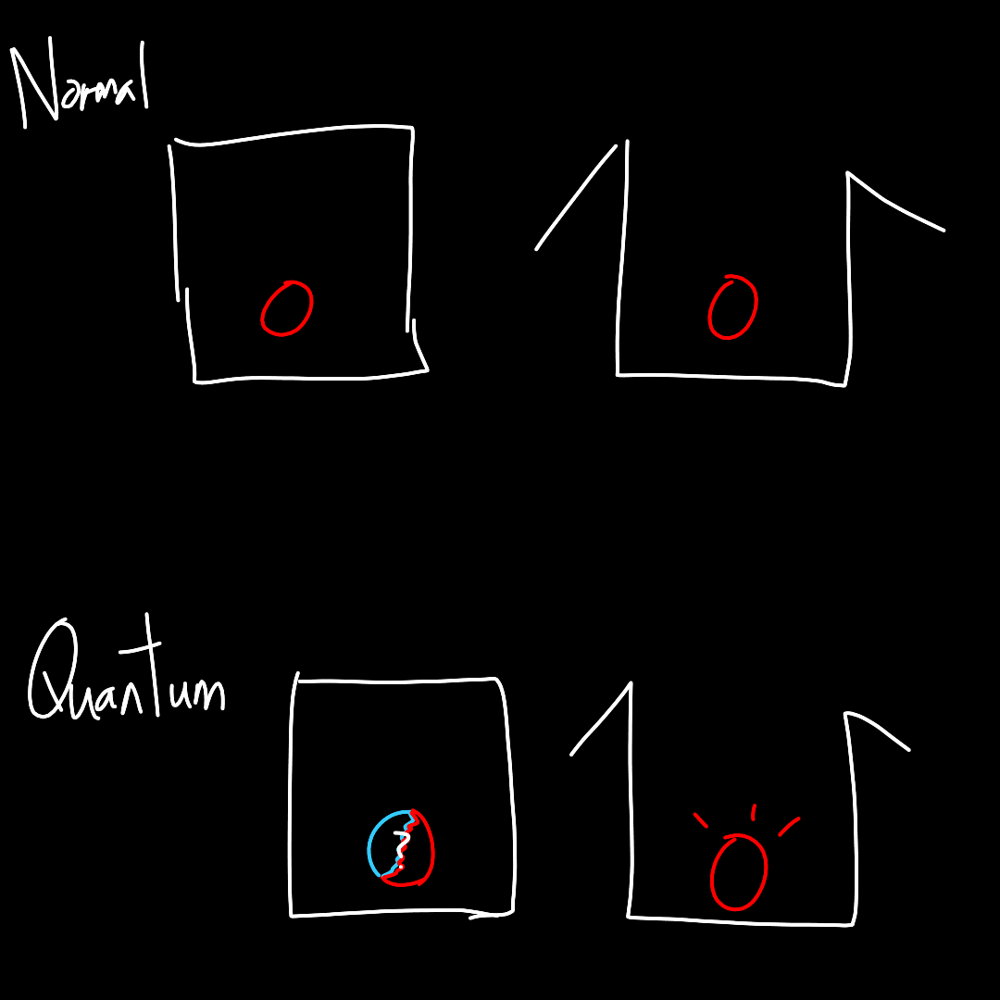
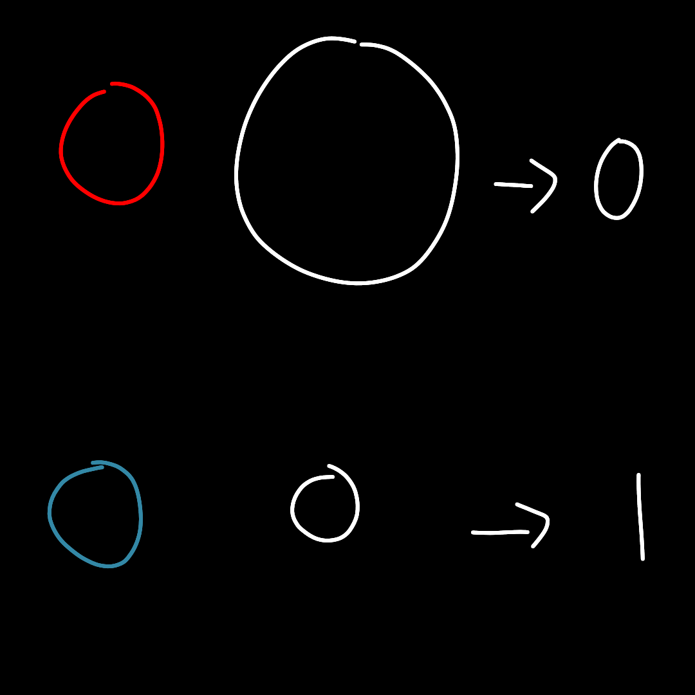

He brought you to a room filled with boxes. After that, he removed 16 boxes from the shelf. Each of them had a colour-changing label that looked like this:
He placed the boxes on a table and arranged them in a 4x4 grid.
"Try to open the boxes," Stephen said.
| ◯ ? |
You opened the boxes. There were some red and blue balls lying in each box.
He replaced the opened boxes with some new ones. They had the same labels.
"Now, take a look at this." He pulled out a mysterious device from his pocket. He pointed it at the boxes and pressed a button. The device shed a blue light on the boxes.

"Try to open the boxes again."
| ◯ ? |
The number of blue balls has increased significantly.
"Isn't it interesting? By using this device, I have changed the chance of getting a blue ball. In fact, I can also set it to something else, like 30%. However, this only works if the boxes are closed. It doesn't work if the boxes are opened." He pointed the device at the opened boxes and pressed a different button. The device emitted a red light, but nothing happened to the balls.
"However, as long as the boxes are not opened, we can change the colours of the balls," he explained.
"These aren't merely loot boxes, these are quantum loot boxes. The balls are in a SUPERPOSITION state."
"What is SUPERPOSITION? For a normal box, the colour of the ball inside is pre-defined: it is either red or blue, even before you open the box. For this quantum lootbox, however, the state of the ball is not defined until you open the box. You have some chance of getting red, and some chance of getting blue. This state is called a SUPERPOSITION state."
"The act of opening the box is called a 'measurement'. What is a measurement? A measurement is when you do something to obtain a result. For example, when you open the box, you are checking if the ball is red or blue. This is a measurement.
When you perform a measurement, the ball will no longer stay in SUPERPOSITION. Instead, it will become either red or blue, according to some probability. What is great about it is that, you can alter this probability before opening it. For example, when I shone my light on the boxes, I made it such that the balls had a very high chance of being blue.
This is very different from swapping red balls with blue ones! The colours of the balls are not pre-determined in any way. Instead, we are only changing the probability of getting a red or blue ball. The colour of the ball is only determined when we open the box."
"SUPERPOSITION states aren't just limited to colours though." He removed some more boxes from the shelves. Their labels looked like this:
"This is a different type of lootbox. Try to open them."
| ◯ ? |
"A quantum object can be in a SUPERPOSITION state of multiple sizes, or multiple locations, or even moving at multiple speeds at multiple directions."
"It would be useful if we could describe these using some kind of units. For all the boxes I just show you, we can represent each state with a 0 or 1."
"The non-quantum world uses bits, which can only be either 0 or 1. In the quantum world though, we aren't just limited to these two states, we also have SUPERPOSITION states! So, instead of just bits, we use 'qubits'. A qubit can be 0, 1, or a mixture of both! In fact, there are infinitely many SUPERPOSITION states. The probabilities are endless!"
You nodded your head. What he said seemed to be important, so you jotted down a keyword inside your memo.